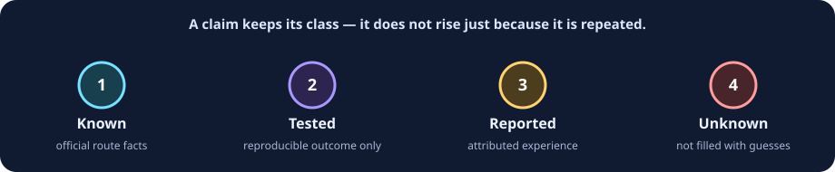

R2 current-status brief · 18 Sep 2026 UTC
Union Alpha’s OpenRouter preview ended; access remains unobserved
The former stealth model is now attributed to Pareto by Unbiased. The old OpenRouter ID is no longer catalog-listed; OpenCode Go still documents a subscription/key-gated alias. Neither route produced an R2 inference response.
Decision
Do not start a fresh integration on
stealth/union-alpha. Treat paid unbiased/pareto as a separate route and evaluation. An already-authorized OpenCode Go subscriber may try its documented route only with a small, non-sensitive request.Attribution
Pareto by Unbiased
Old OpenRouter ID
No longer listed
The historical page says the free stealth period ended; catalog search found no
stealth/union-alpha. This is not an observed API error. R2-S02R2 direct requests
n = 0
No lawful pre-existing credential was available. No HTTP status, headers, latency, tool, image, capacity or uptime result exists.
OpenCode Go
Documented, subscription/key-gated, untested
It still lists
union-alpha / opencode-go/union-alpha as Free (limited time), but docs require sign-in, a Go subscription and an API key. “Unlimited” is an entitlement/estimate—not a quota, SLA, or proof of no-cost access. R2-S06R1 record
Preserved
Four launch-day attempts DNS-failed before HTTP. That historic environment result was not repeated in R2.
Status at a glance

| Route | What R2 documents | What it does not establish |
|---|---|---|
| OpenRouter old ID | Free stealth period ended; old ID absent from catalog; historical page points to paid Pareto. | Old-ID HTTP response, legacy-key behavior, a current quota, Pareto retention, or Pareto performance. |
| OpenCode Go alias | Public docs/catalog still name it; sign-in, subscription and key are required; privacy table lists no training / 0-day retention. | Authorization, success, actual capacity, actual price to access, or equivalence to the old preview. |
Limit reader
Limit boundary: generic OpenRouter 50/day/free-model policy is not a Union Alpha or Pareto quota. Go’s “Unlimited” label is limited-time documentation under a subscription, not a capacity guarantee. The exact current allowance and reliability are unknown.
What changed since the launch audit
Sep 16 · R1OpenRouter listed a free anonymous stealth route; four attempts ended at DNS before HTTP.
Sep 18 · R2Official text attributes the former stealth model to Unbiased / Circuit & Chisel, says the preview ended, and directs to paid Pareto.
Sep 18 · R2OpenCode Go documentation remains public, but access is subscription/key-gated and no authorized request was made.
Read the benchmark boundary, historical identity leads, launch-day user reports, and route-specific access instructions. Full records: R2 and R1.